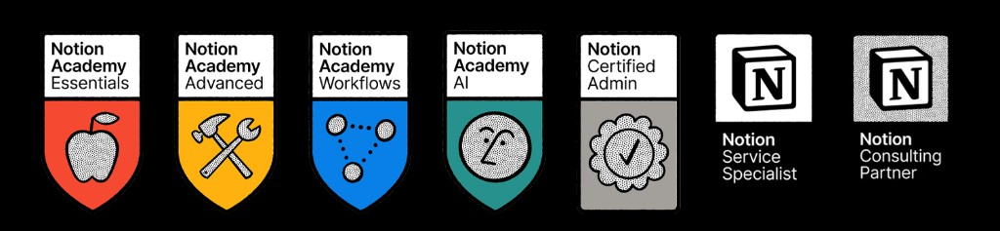
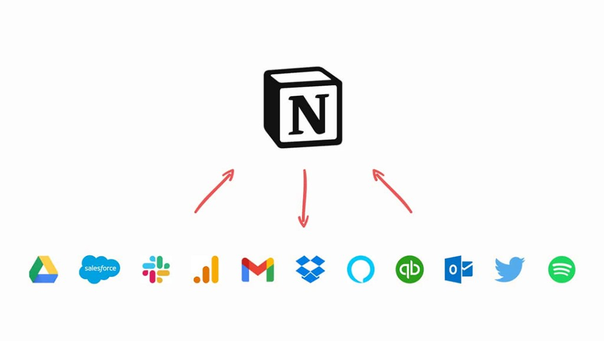

Official Notion Solution Consultant
Build Structured Systems with Notion.
Madosinc is an official Notion Solution Consultant helping organizations design, implement, and scale powerful workflows, systems, and digital operations.

-
Official Notion Consulting Partner
Authorized to deliver certified Notion solution consulting for teams and enterprises.
-
Workflow Experts
Deep expertise in mapping, designing, and operationalizing business workflows in Notion.
-
Enterprise Implementation Experience
Proven delivery for growing startups and established organizations at scale.
Notion Certification
Officially certified by Notion — Academy, Admin, Service Specialist, and Consulting Partner credentials.
Services
End-to-end consulting to design, build, and sustain your Notion operating system.
Workflow Discovery
Map current processes, pain points, and opportunities before you build.
Workflow Implementation
Translate discovered workflows into structured, actionable Notion systems.
Solution Implementation
Deploy complete Notion solutions aligned to your business objectives.
Integration Services
Connect Notion with your existing tools, APIs, and data sources.
Migration Services
Move teams safely from legacy tools into a unified Notion workspace.
Change Management
Guide adoption with communication plans, rollout strategy, and stakeholder alignment.
Custom Training
Role-based sessions so every team member uses the system with confidence.
Ongoing Support
Continuous optimization, troubleshooting, and system evolution as you grow.
Project Management
Structured delivery with clear milestones, ownership, and accountability.
Custom Templates
Reusable, branded templates that standardize work across your organization.
Integrations & Connected Systems
Notion as your central operating system — connected to the tools your teams already use.


Solutions & Use Cases
Structured systems we design and implement for organizations like yours.
-
Startup
Startup Workspace Setup
Unified hub for docs, tasks, and team alignment from day one.
-
Enterprise
Corporate Knowledge System
Centralized wikis, SOPs, and institutional knowledge at scale.
-
Operations
Project Management System
Cross-functional project tracking with clear ownership and status.
-
Sales
CRM in Notion
Pipeline, accounts, and activity tracking tailored to your sales motion.
-
People
HR System Setup
Onboarding, directories, policies, and people operations in one place.
How We Work
A clear, repeatable methodology from discovery through long-term optimization.
-
01
Discovery
Understand goals, stakeholders, and current state.
-
02
System Mapping
Document workflows, data flows, and dependencies.
-
03
Design & Structuring
Architect databases, views, and information hierarchy.
-
04
Implementation
Build, integrate, and validate the live system.
-
05
Training
Enable teams with practical, role-specific guidance.
-
06
Support & Optimization
Iterate and refine as your business evolves.
Our Clients
Trusted by organizations across government, advisory, billing, and professional services — and many others.
Plus startups, enterprises, and teams building structured Notion systems worldwide.
Why Madosinc
Consulting built on structure, clarity, and long-term partnership.
-
Structured thinking approach
Every engagement starts with clear logic—how information flows, who owns what, and how work gets done.
-
Notion-certified methodology
Official partner practices ensure solutions align with Notion best practices and platform capabilities.
-
Business-first system design
Technology serves outcomes. We design for how your organization actually operates.
-
Scalable workflows
Systems that grow with headcount, complexity, and new business units without breaking.
-
Long-term support model
We stay engaged beyond launch—optimization, training, and evolution as a trusted partner.
Leadership Team
Notion Certified Consultants and co-founders leading every engagement.
-
Hammad Hassan
Notion Certified Consultant · Co-Founder
Leads system architecture, enterprise implementation, and structured workflow design for client organizations.
-

Ahmad Hassan
Notion Certified Consultant · Co-Founder
Drives solution delivery, client success, and hands-on Notion consulting across discovery through support.
About Madosinc
Our Mission
Madosinc exists to help businesses design, implement, and scale structured digital systems in Notion. We believe clarity in how work is organized directly improves productivity, alignment, and decision-making across every team.
Consulting Philosophy
We partner with leaders who want more than templates—they want operating systems. Our consulting is collaborative, transparent, and grounded in measurable outcomes. We listen first, design second, and implement with discipline.
System-First Approach
Before databases and dashboards, we define the system: inputs, processes, outputs, and ownership. This foundation ensures your Notion workspace remains coherent as teams, tools, and priorities change. Structure is not constraint—it is the freedom to scale with confidence.
Let’s Build Your System Together.
Schedule a consultation to discuss your workflows, goals, and how Madosinc can help transform your digital operations.
Contact
Reach us at contact@madosinc.com or send a message below.